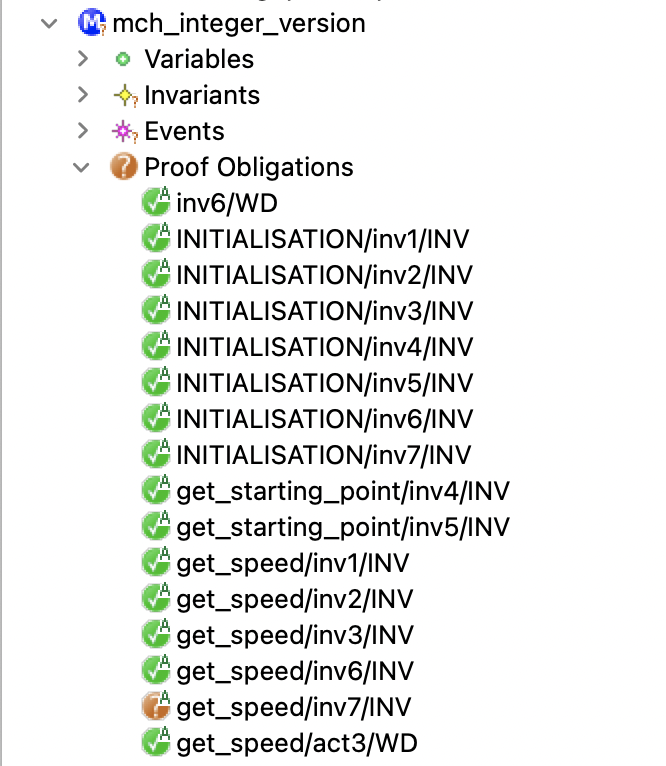
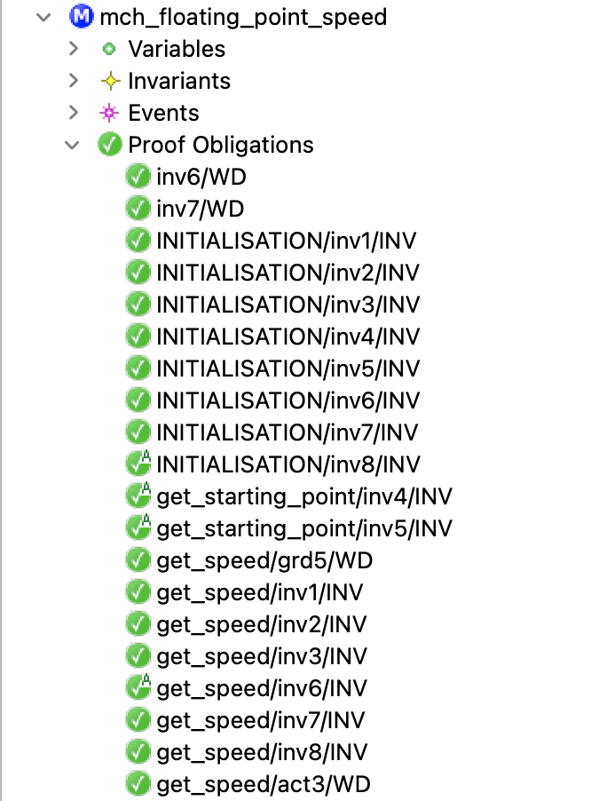

$12^{th}$ International Conference on Model & Data Engineering (MEDI 2023)
Sousse, Tunisia 2-4 November 2023
Sousse, Tunisia 2-4 November 2023

A simple example
The Event-B model
The Event-B model
The Event-B model
generated and proven POs
- All POs are green except the one maintaining
the $@inv7$ invariant by the$get\_speed$event. - This invariant formalises the PROP 2 property.
- the object moves (
$traveled\_distance \neq 0$)
when$speed \neq 0$.
- the object moves (
- The
$get\_speed$event calculates the new value of$traveled\_distance$that can be$\lt$the new value of$measured\_time$.- the new value of
$speed$($traveled\_distance$ $\div$ $measured\_time$)
can be$=$ $0$while$traveled\_distance \neq 0$($\div$makes an integer division)
- the new value of
Conclusion
The basic types and operators of the Event-B language
are not adapted to our needs
are not adapted to our needs
floating-point numbers
$$
x = 3.14159265359 =
\underset{\text{significand}}{\underbrace{314159265359}} \times
\underset{\text{base}}{\underbrace{10}}^{\overset{\text{exponent}}{\overbrace{-11}}}
$$
We have chosen that the base always equals ten in our models.
$
x = s(x) \times 10^{e(x)}
$
- The proposed theory does not model limited precision.
- The operators defined in the theory involve no precision loss.
The proposed approach
The power operator
- THEORY thy_power_operator
- AXIOMATIC DEFINITIONS
- operators
- pow(x $\in$ $\mathbb Z$, n $\in$ $\mathbb N$) : $\mathbb Z$ INFIX // x pow n = $x^n$
- wd condition : $\neg$ (x $=$ 0 $\land$ n $=$ 0) // $0^0$ is not defined
- axioms
- axm1: $\forall$ n. n $\in \mathbb N_1$ $\mathbin\Rightarrow$ 0 pow n = 0
- axm2: $\forall$ x. x $\in \mathbb Z$ $\land$ x $\neq$ 0 $\mathbin\Rightarrow$ x pow 0 = 1
- axm3: $\forall$ x,n. x $\in \mathbb Z$ $\land$ x $\neq$ 0 $\land$ n $\in \mathbb N_1$ $\mathbin\Rightarrow$ x pow n = x $\times$ (x pow (n-1))
- ...
- operators
- THEOREMS
- thm1: $\forall$ x,n,m. $...$ $\mathbin\Rightarrow$ x pow (n + m) = (x pow n) $\times$ (x pow m)
- thm2: $\forall$ x,n,m. $...$ $\mathbin\Rightarrow$ (x pow n) pow m = x pow (n $\times$ m)
- thm3: $\forall$ x,y,n. $...$ $\mathbin\Rightarrow$ (x $\times$ y) pow n = (x pow n) $\times$ (y pow n)
- ...
- END
Some remarks
- By using this theory, it becomes possible to prove, for example, that
5 pow 3 = 125 - The proofs of all theorems were made by induction
(following the rules defined by Cervelle and Gervais - ABZ 2023). - We have chosen to define the pow operator in a single theory
to offer the possibility of reusing it in other Event-B components.
The floating-point numbers theory
The floating-point numbers theory
The floating-point numbers theory
The case of inv and div operators
The case of inv and div operators
The case of inv and div operators
The floating-point numbers theory
The floating-point numbers theory
Some remarks
-
Due to our choice to formalise unlimited precision FP numbers,
some properties that are not true in the FP numbers world can be deduced.
- the associativity of addition and multiplication, for example
- If this theory is refined (towards the IEEE Standard 754, for example), the developer must pay attention to this point.
Natural variables
- THEORY thy_floating_point_numbers
- ...
- PFLOAT_Type = { x $\cdot$ x $\in$ FLOAT_Type $\land$ s(x) $\geq$ 0 | x }
- ...
- END
- All NATURAL variables are typed by PFLOAT_Type set containing positive floating-point numbers.
Revisiting our example I
Revisiting our example I
Revisiting our example I
Revisiting our example II
Revisiting our example II
Revisiting our example II
generated and proven POs

- All generated POs have been proven.
- The get_speed/inv8/INV PO becomes ✔.
- thanks to handling small values ($]0..1[$),
- and to the new div operator specification.
The floating-point numbers theory is more suitable than the basic integers of Event-B.
Conclusion
- Extending the Event-B type-checking system by an approach
using the theory plugin. - Development of a floating point number theory formalizing
floating point numbers.- an extension of the Event-B power operator.
- an abstract representation of the floating-point numbers.
- a set of theorems and associated rewrite and inference rules.
future works
- Refining the proposed theory to any more concrete implementation
(the IEEE standard 754, for example). - Developing a more general theory formalizing the standard units
of measurement defined by the International System of Units (SI).- extending the floating point number theory.
- helpful in modelling cyber-physical/hybrid systems.